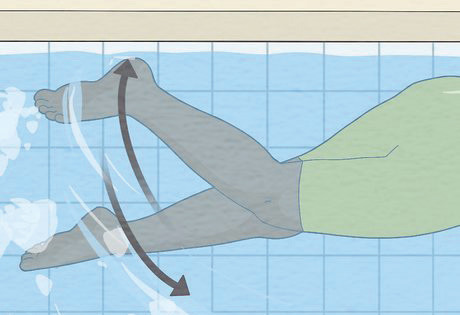
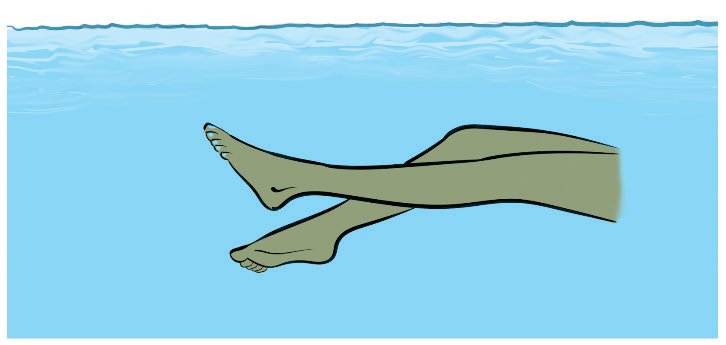
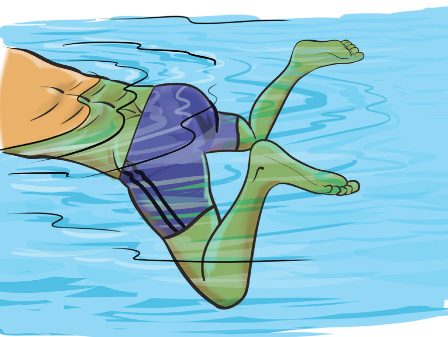

should keep their feet close together and make quick, continuous motions to reduce drag and maintain speed.

(a)

(b)
Figure 3.14: Flutter kick execution
Frog kick
Frog kick is a wide-sweeping movement of the leg that powers the breaststroke. In this kick, the swimmer bends their knees outward while bringing their feet toward their body, then pushes the legs outward and backward in a circular motion before bringing them back together, Figure 3.15. The frog kick provides strong propulsion with each cycle and is most effective when synchronised with the arm movements of the breaststroke. Proper execution requires a controlled, smooth motion rather than forceful splashes.

Figure 3.15: Frog kick execution